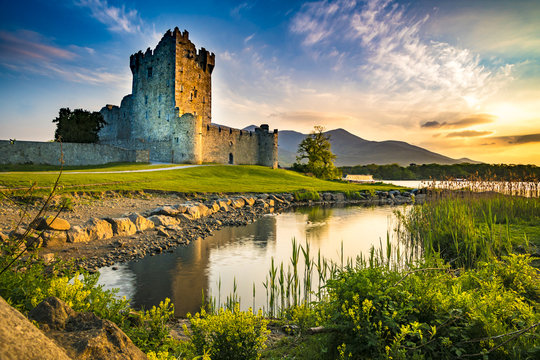
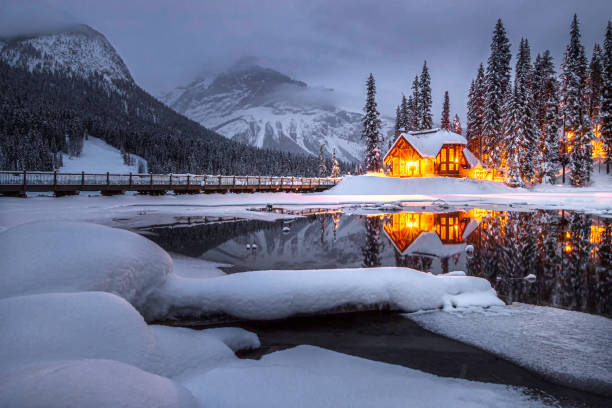

This website is designed to inspire and guide users in planning their ideal vacation by exploring destinations around the world, including Ireland and Canada. It provides general information, highlights unique travel experiences, and offers ideas for different types of trips, from relaxing getaways to adventurous journeys. From Ireland’s lush landscapes and rich cultural heritage to Canada’s vast natural beauty and vibrant cities, the goal is to help visitors discover new places, learn about different cultures, and find inspiration for their next travel experience.
Ireland

Ireland is a breathtaking destination known for its lush green landscapes, dramatic coastlines, and rich cultural heritage. Visitors can explore historic castles, charming villages, and vibrant cities while experiencing traditional music, friendly locals, and unique traditions. From scenic countryside views to lively urban atmospheres, Ireland offers a perfect blend of natural beauty and cultural charm for any traveler.
Canada

Canada is a stunning destination known for its vast landscapes, diverse wildlife, and vibrant multicultural cities. Visitors can explore majestic mountains, pristine lakes, and national parks while also enjoying modern attractions, festivals, and cuisine in cities like Toronto, Vancouver, and Montreal. From outdoor adventures to cultural experiences, Canada offers something for every traveler seeking both natural beauty and urban excitement.